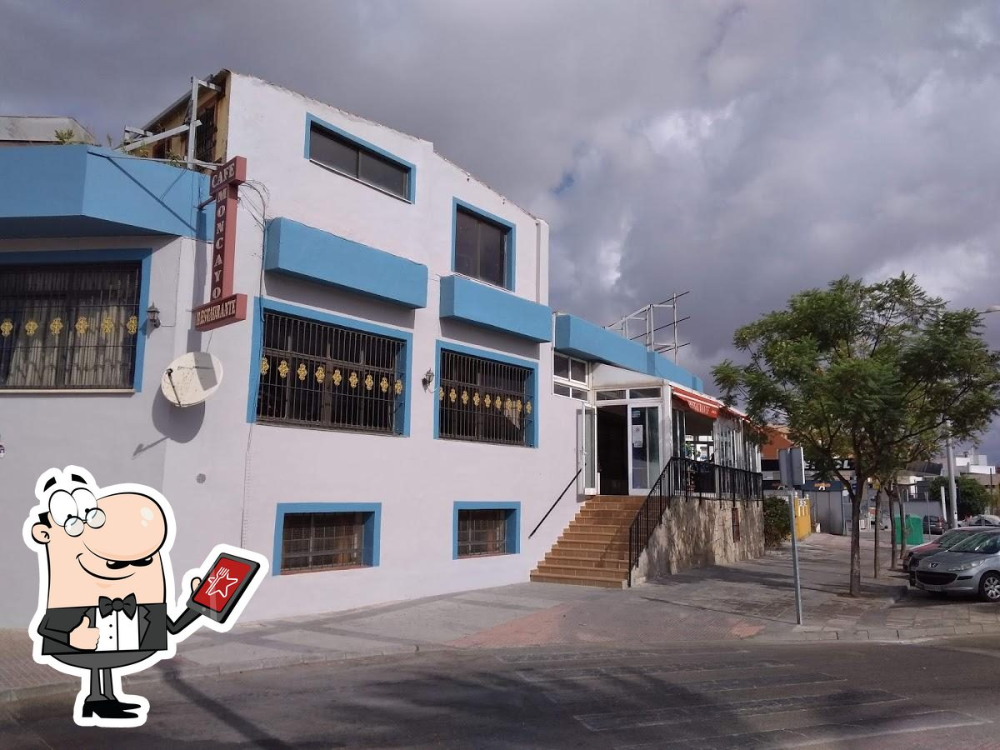

En Restaurante Moncayo llevamos años formando parte de la vida de Algeciras, ofreciendo a nuestros clientes una cocina tradicional española y andaluza basada en los sabores de siempre, la calidad de los productos y el cariño por la cocina casera. Situados en Calle Castellar, 2, abrimos nuestras puertas cada día para recibir tanto a nuestros clientes habituales como a quienes vienen a conocernos por primera vez. Nuestra carta ofrece una variedad de desayunos, tapas y platos tradicionales pensados para disfrutar de una comida sencilla, sabrosa y de calidad. Entre nuestras especialidades destacan las tapas caseras, el salmorejo y diferentes elaboraciones inspiradas en la gastronomía de siempre, utilizando ingredientes frescos y seleccionados. En Moncayo creemos que comer bien no solo depende de la comida, sino también del ambiente y del trato. Por eso nos esforzamos cada día por ofrecer un servicio cercano, profesional y familiar, creando un espacio cómodo donde nuestros clientes puedan sentirse como en casa y disfrutar de cada visita. Nos sentimos orgullosos de formar parte del día a día de Algeciras y de haber construido, con el paso de los años, una relación cercana con nuestros clientes. Familias, amigos, trabajadores y visitantes encuentran en Restaurante Moncayo un lugar donde compartir una buena mesa y disfrutar de la gastronomía tradicional. Seguimos trabajando con la misma ilusión y dedicación para mantener nuestras raíces, cuidar la calidad de cada plato y continuar siendo un referente para quienes buscan desayunos, tapas y comida casera en Algeciras. Porque para nosotros, cada cliente y cada visita forman parte de la historia de Restaurante Moncayo.
